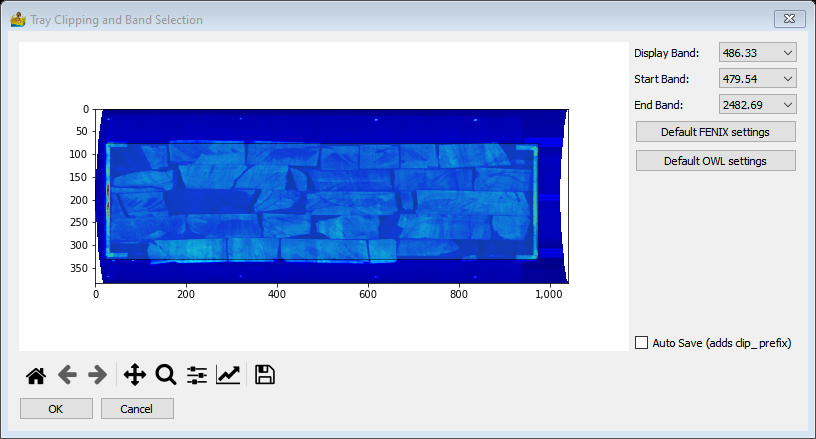

Boreholes: Description of Modules¶
This section is a work in progress and will most likely change in the future.
Import Borehole Data¶
Borehole data in the Council for Geoscience format can be imported here. It consists of two excel files:
Header file with columns: Seqno, Farmname, Farmno, Regdist, Companyno, Boreholeid, Depth from, Depth to, Drill date, Inclination, Azimuth, Map, Latitude, Longitude, Elevation, Lox, Loy, Locunc, Declat, Declon, Commodity, Commodity2, Commodity3, Commodity4, Company
Lithology file with columns: Seqno, Farmname, Farmno, Regdist, Companyno, Boreholeid, Map, Depth from, Depth to, Lithology status, Lithology, Stratigraphy, Rank, Lithology description
Raw Core Imagery Corrections¶
The interface for raw imagery corrections combines the DC corrections, smile correction as well as spike removal and smoothing. Options are as follows:
Input raw directory – This is the directory where raw scanned core data resides, in ENVI format.
Output processed directory – location for processed files to be stored.
DC Correction – applies white balance correction. This requires a white reference and dark reference file to be in the same directory as the scanned core data.
Geometric smile correction – applicable to FENIX data.
Spike removal – spikes are located and removed using a Hampel filter.
Smoothing – smoothing is done using a Savitzky-Golay filter
Tray Clipping and Band Selection¶
The box mask correction is used to cut out the space of the image around the box, as well as mask out data which is not related to the core. The user clicks on the black boundary and drags it into the desired location. Options on the interface include:
Zoom and pan tools for the plot.
Display Band – which data band to display on the plot.
Start Band for the exported data.
End Band for the exported data.
Default FENIX settings. Sets up a default box clip and default band range.
Default OWL settings. Sets up a default box clip and default band range.
The data is exported outside of the tool using the standard raster data export.
Core Masking¶
This tool makes use of supervised classification, applying the SVC technique. The user selects a class (either ‘Core’ or ‘Tray’) and draws it over sections of the core (like using a paint program). When a few samples are drawn in, the ‘Classify Data’ option is pressed and a possible mask solution is displayed.
If this solution is not accurate, the user can revert to an unclassified image, and start again, or use the paint tool to correct the mask. Alternatively the mask can be saved to disk.
Options are:
Band selection (below plot) - this is purely for display purposes.
Slider – allows for comparison between a calculated mask and the original core.
Class selection list – can be ‘Erase’, ‘Core’ or ‘Tray’ to either choose a class or erase a previous class.
Line thickness – thickness of draw line
SVC kernel – can be RBF (radial basis function), linear of poly (polynomial).
Classify Data – option to start classification. This text changes to ‘Revert to classes’ after classification
Save Mask – option to save mask to disk. The filename is the same as the input, with a ‘mask’ prefix to the filename.

Core Metadata and Depth Assignment¶
All core data has metadata associated with it. The most critical (for PyGMI purposes) is information relating the core tray, and associated core depths
By default, all trays are assumed to start at 0 depth, and have a maximum depth calculated based on the number of core rows per tray, and the tray length. By adding depth markers, these depths are then recalculated.
The options are as follows:
Display Band: wavelength to display.
Number of core per tray – refers to rows of core
Tray Length – in mm.
Current Depth Marker – depth markers are added by clicking on the plot.
Marker Depth – this is a manual depth entry option. All depths, except for the final depth, can be altered.
Delete Current Depth Mark – this applied to all depth marks, excluding the ‘Start’ and ‘End’ mark
Information
Save Depth Marks – marks are saved to a .json file. This is a universal text format for storing data. The filename is the same as the core data file, but has a .json extension.